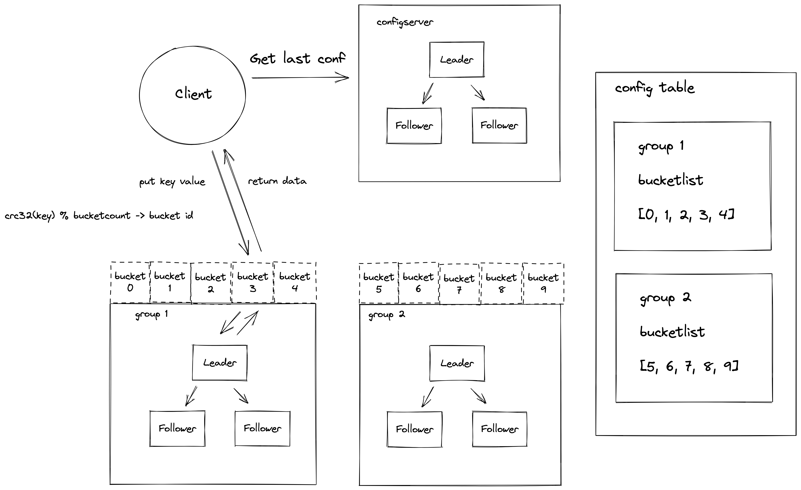

精解计算机系统课程
MIT 分布式系统（六）Multi-Raft 设计与实现 #
设计思考
在上一章中，我们应用 Raft 实现了一个单分组的 KV 集群。客户端写请求到 Leader，Leader 把操作复制到 Follower 节点。当 Leader 挂了，会按第四章描述的 Raft 算法库进行一轮新的选举，选出新的 Leader 后继续提供服务。这样我们就有了一个高可用的集群。
我们通过单分组的 KV 集群实现了高可用以及分区容忍性，但是分布式系统还有一个可扩展的特性——我们可以通过增加机器来让系统实现更高的吞吐量。第五章实现的是单分组集群，只有单个 Leader 节点承担客户端的写入，吞吐量上限取决于单机性能。那么我们该如何实现分布式可扩展性呢？
接下来我们将介绍 Multi-Raft 实现，它可以解决单分组集群的可扩展性问题。思路是这样的：既然单组有上限，那么我们可不可以用多组 Raft KV 集群来实现扩展呢？我们需要有一个配置中心来管理多个分组服务器的地址信息。有了多个分组之后，我们就要考虑怎样把用户的请求均衡地分发到相应的分组服务器上。我们可以使用哈希算法来解决这个问题，对用户的 key 做哈希计算，然后映射到不同的服务分片（Shard）上，这样可以保证流量的均衡。
整合一下上面的思路，我们可以得到如下的系统架构图：

首先，客户端启动之后，会从配置服务器（ShardCtrler）拉取集群的分组信息以及分组负责的数据分片（Shard）信息到本地。客户端发送请求的时候会计算 key 的哈希值，找到相应的分片以及负责这个分片的服务器分组（ShardKV）地址信息，然后将操作发送到对应的服务器分组进行处理。这里 ShardCtrler 服务器分组和 ShardKV 服务器分组都是高可用的，多个 ShardKV 实现了系统的可扩展性。
在 raft_cpp 中，这一章对应 MIT 6.824 的 Lab 4A（ShardCtrler）和 Lab 4B（ShardKV）。下面我们分别来看这两个核心组件的 C++ 实现。
ShardCtrler 配置服务器实现
配置服务的实现在 shardctrler.h / shardctrler.cpp 中。根据上面的架构图，配置服务器需要存储以下信息：（1）每个服务分组的服务器地址信息；（2）服务分组负责的分片信息。这个结构定义在 sc_common.h 中：
// sc_common.h
constexpr int NShards = 10; // 系统中分片的最大数量
struct SCConfig {
int Num = 0; // 配置版本号
std::array<int, NShards> Shards = {}; // shard -> gid
std::map<int, std::vector<std::string>> Groups; // gid -> servers[]
SCConfig() { Shards.fill(0); }
};
inline SCConfig DefaultSCConfig() {
SCConfig c;
c.Num = 0;
return c;
}
Num 表示当前配置的版本号。Shards 数组存储了每个分片由哪个分组（gid）负责。NShards 是一个常量，表示系统中分片的数量，默认为 10。对于大规模的分布式系统，NShards 可以被设置得更大。Groups 是一个映射表，记录了每个 gid 对应的服务器地址列表。
配置服务器支持四个操作：Join（加入新分组）、Leave（删除分组）、Move（重新分配分片）、Query（查询配置）。操作类型和请求/响应结构定义如下：
// sc_common.h
enum SCOperationOp : uint8_t {
SCOpJoin = 0,
SCOpLeave = 1,
SCOpMove = 2,
SCOpQuery = 3
};
struct SCCommandRequest {
std::map<int, std::vector<std::string>> Servers; // for Join
std::vector<int> GIDs; // for Leave
int Shard = 0; // for Move
int GID = 0; // for Move
int Num = 0; // for Query
SCOperationOp Op = SCOpQuery;
int64_t ClientId = 0;
int64_t CommandId = 0;
};
struct SCCommandResponse {
SCErr Err = SC_OK;
SCConfig Config;
};
配置服务器定义了一个抽象的状态机接口 ConfigStateMachine，以及基于内存的实现 MemoryConfigStateMachine：
// sc_statemachine.h
class ConfigStateMachine {
public:
virtual ~ConfigStateMachine() = default;
virtual SCErr Join(const std::map<int, std::vector<std::string>>& groups) = 0;
virtual SCErr Leave(const std::vector<int>& gids) = 0;
virtual SCErr Move(int shard, int gid) = 0;
virtual std::pair<SCConfig, SCErr> Query(int num) = 0;
virtual void Close() = 0;
virtual int64_t Size() = 0;
};
class MemoryConfigStateMachine : public ConfigStateMachine {
public:
MemoryConfigStateMachine();
SCErr Join(const std::map<int, std::vector<std::string>>& groups) override;
SCErr Leave(const std::vector<int>& gids) override;
SCErr Move(int shard, int gid) override;
std::pair<SCConfig, SCErr> Query(int num) override;
void Close() override {}
int64_t Size() override { return static_cast<int64_t>(configs_.size()); }
protected:
std::vector<SCConfig> configs_;
};
MemoryConfigStateMachine 内部维护了一个 configs_ 向量，保存了所有历史版本的配置。Join 操作会创建新的配置版本，将新分组加入 Groups 映射，并将新分片分配给分组中最少分片的组。Leave 操作会移除指定分组，并将这些分组负责的分片重新分配。Move 操作会将指定分片从一个分组迁移到另一个分组。Query 操作根据版本号查询配置，num=-1 表示查询最新配置。
ShardCtrler 类的设计与第五章的 KVServer 非常类似，只是将 KV 操作替换为配置操作：
// shardctrler.h
class ShardCtrler : public std::enable_shared_from_this<ShardCtrler> {
public:
static std::shared_ptr<ShardCtrler> Make(
std::vector<std::shared_ptr<RaftPeer>> peers,
int me,
std::shared_ptr<Persister> persister);
void HandleCommand(const SCCommandRequest& req, SCCommandResponse& resp);
void Kill();
private:
ShardCtrler() = default;
mutable std::mutex mu_;
std::atomic<bool> dead_{false};
std::shared_ptr<Raft> rf_;
std::shared_ptr<BlockingQueue<ApplyMsg>> applyCh_;
int lastApplied_ = 0;
std::unique_ptr<ConfigStateMachine> stateMachine_;
std::unordered_map<int64_t, SCOperationContext> lastOperations_;
std::unordered_map<int, std::shared_ptr<BlockingQueue<SCCommandResponse>>> notifyChans_;
std::thread applierThread_;
};
HandleCommand 的处理流程与 KVServer::HandleCommand 几乎一样：先做去重检查（非 Query 操作），然后序列化提交到 Raft，等待 applier 通过 notifyChan 通知结果：
// shardctrler.cpp
void ShardCtrler::HandleCommand(const SCCommandRequest& req, SCCommandResponse& resp) {
// 1. 去重检查（非 Query 操作）
{
std::lock_guard<std::mutex> lk(mu_);
if (req.Op != SCOpQuery && isDuplicateRequest(req.ClientId, req.CommandId)) {
auto it = lastOperations_.find(req.ClientId);
if (it != lastOperations_.end()) {
resp = it->second.LastResponse;
return;
}
}
}
// 2. 序列化并提交到 Raft
SCCommand cmd;
cmd.Request = req;
auto cmdBytes = scser::serializeCommand(cmd);
auto result = rf_->Start(cmdBytes);
if (!result.isLeader) {
resp.Err = SC_ErrWrongLeader;
return;
}
// 3. 等待通知
std::shared_ptr<BlockingQueue<SCCommandResponse>> ch;
{
std::lock_guard<std::mutex> lk(mu_);
ch = getNotifyChan(result.index);
}
SCCommandResponse reply;
bool got = ch->pop_for(reply, kSCExecuteTimeout);
if (got) {
resp = reply;
} else {
resp.Err = SC_ErrTimeout;
}
// 4. 异步清理
std::thread([this, index = result.index]() {
std::lock_guard<std::mutex> lk(mu_);
removeOutdatedNotifyChan(index);
}).detach();
}
applier 线程从 applyCh 中读取已提交的消息，根据操作类型应用到配置状态机：
// shardctrler.cpp
SCCommandResponse ShardCtrler::applyLogToStateMachine(const SCCommand& cmd) {
SCCommandResponse resp;
switch (cmd.Request.Op) {
case SCOpJoin:
resp.Err = stateMachine_->Join(cmd.Request.Servers);
break;
case SCOpLeave:
resp.Err = stateMachine_->Leave(cmd.Request.GIDs);
break;
case SCOpMove:
resp.Err = stateMachine_->Move(cmd.Request.Shard, cmd.Request.GID);
break;
case SCOpQuery: {
auto [config, err] = stateMachine_->Query(cmd.Request.Num);
resp.Config = config;
resp.Err = err;
break;
}
}
return resp;
}
SCClerk 是配置服务器的客户端，提供 Query/Join/Leave/Move 四个接口，内部实现了与 Clerk 类似的自动重试和 Leader 发现逻辑。ShardKV 节点通过 SCClerk 来查询最新的配置信息，客户端通过 SCClerk 来加入/离开分组。
// sc_clerk.h
class SCClerk {
public:
explicit SCClerk(std::vector<std::shared_ptr<SCClerkPeer>> servers);
SCConfig Query(int num); // 查询配置
void Join(const std::map<int, std::vector<std::string>>& servers); // 加入分组
void Leave(const std::vector<int>& gids); // 离开分组
void Move(int shard, int gid); // 迁移分片
private:
SCConfig doCommand(const SCCommandRequest& req);
std::vector<std::shared_ptr<SCClerkPeer>> servers_;
int leaderId_ = 0;
int64_t clientId_ = 0;
int64_t commandId_ = 0;
};
ShardKV 分片服务器实现
ShardKV 是实际处理客户端 KV 请求的分片服务器。与第五章的 KVServer 不同，ShardKV 需要处理分片迁移、配置更新、跨组通信等复杂逻辑。我们先来看分片状态和命令类型的定义：
// skv_common.h
// 分片状态
enum ShardStatus : uint8_t {
Serving = 0, // 正常服务
Pulling = 1, // 正在从其他分组拉取数据
BePulling = 2, // 正在被其他分组拉取数据
GCing = 3 // 等待垃圾回收（数据已拉走但尚未清理）
};
// 命令类型
enum SKVCommandType : uint8_t {
SKV_Operation = 0, // 普通 KV 操作
SKV_Configuration = 1, // 配置更新
SKV_InsertShards = 2, // 插入拉取到的分片数据
SKV_DeleteShards = 3, // 删除已迁走的分片数据
SKV_EmptyEntry = 4 // 空条目（保证 Leader 有当前任期日志）
};
分片有四种状态，构成了一个状态机：Serving 表示分片正常服务客户端请求；Pulling 表示分片刚分配给本组，正在从旧所有者拉取数据；BePulling 表示分片不再属于本组，正在被新所有者拉取数据；GCing 表示数据已被新所有者拉走，等待本地清理。
分片状态机演示
SKVCommand 是存储在 Raft 日志中的命令包装，支持五种类型：普通 KV 操作、配置更新、插入分片数据、删除分片数据和空条目。空条目的作用是保证 Leader 在当前任期有日志条目，这对于 Raft 的选举承诺机制很重要。
// skv_common.h
struct SKVCommand {
SKVCommandType type = SKV_EmptyEntry;
std::vector<uint8_t> data; // 序列化的 payload
};
// 分片操作请求（跨组通信）
struct ShardOperationRequest {
int configNum = 0;
std::vector<int> shardIDs;
};
// 分片操作响应（跨组通信）
struct ShardOperationResponse {
SKVErr err = SKV_OK;
int configNum = 0;
std::map<int, std::map<std::string, std::string>> shards; // shardID -> KV data
std::map<int64_t, SKVOperationContext> lastOperations; // 去重信息
};
// key 到分片的映射
inline int key2shard(const std::string& key) {
int shard = 0;
if (!key.empty()) {
shard = static_cast<unsigned char>(key[0]);
}
return shard % NShards;
}
key2shard() 使用 key 的第一个字符对 NShards 取模来计算分片 ID。ShardOperationRequest/Response 用于跨组通信，当分片迁移时，新所有者通过 GetShardsData RPC 从旧所有者拉取数据，旧所有者通过 DeleteShardsData RPC 通知新所有者可以清理数据。
ShardKV 类是整个分片服务器的核心，它继承了 enable_shared_from_this 并运行 5 个后台线程：
// shardkv.h
class ShardKV : public std::enable_shared_from_this<ShardKV> {
public:
static std::shared_ptr<ShardKV> Make(
std::vector<std::shared_ptr<RaftPeer>> peers,
int me,
std::shared_ptr<Persister> persister,
int maxRaftState,
int gid,
std::shared_ptr<SCClerk> sc,
ShardKVPeerProvider peerProvider);
void Command(const SKVCommandRequest& req, SKVCommandResponse& resp);
void GetShardsData(const ShardOperationRequest& req, ShardOperationResponse& resp);
void DeleteShardsData(const ShardOperationRequest& req, ShardOperationResponse& resp);
private:
// ── 成员变量 ──
std::shared_ptr<Raft> rf_;
std::shared_ptr<BlockingQueue<ApplyMsg>> applyCh_;
int maxRaftState_ = -1;
int lastApplied_ = 0;
int gid_; // 本组的分组 ID
std::shared_ptr<SCClerk> sc_; // 配置服务器客户端
std::array<std::map<std::string, std::string>, NShards> shards_; // 分片数据
std::array<ShardStatus, NShards> shardStatus_ = {}; // 分片状态
SCConfig currentConfig_;
SCConfig lastConfig_;
std::unordered_map<int64_t, SKVOperationContext> lastOperations_;
std::unordered_map<int, std::shared_ptr<BlockingQueue<SKVCommandResponse>>> notifyChans_;
ShardKVPeerProvider peerProvider_; // 跨组通信的 peer 提供器
// 5 个后台线程
std::thread applierThread_;
std::thread configureThread_;
std::thread migrationThread_;
std::thread gcThread_;
std::thread emptyEntryThread_;
};
ShardKV 的构造流程在 Make() 工厂方法中，启动了 5 个后台线程：
// shardkv.cpp
std::shared_ptr<ShardKV> ShardKV::Make(
std::vector<std::shared_ptr<RaftPeer>> peers,
int me,
std::shared_ptr<Persister> persister,
int maxRaftState,
int gid,
std::shared_ptr<SCClerk> sc,
ShardKVPeerProvider peerProvider)
{
auto applyCh = std::make_shared<BlockingQueue<ApplyMsg>>();
std::shared_ptr<ShardKV> kv(new ShardKV());
kv->maxRaftState_ = maxRaftState;
kv->applyCh_ = applyCh;
kv->rf_ = raft::Raft::Make(peers, me, persister, applyCh);
kv->gid_ = gid;
kv->sc_ = sc;
kv->peerProvider_ = std::move(peerProvider);
kv->currentConfig_ = DefaultSCConfig();
kv->lastConfig_ = DefaultSCConfig();
// 初始化分片状态
kv->initStateMachines();
// 从快照恢复
auto snap = persister->ReadSnapshot();
if (!snap.empty()) {
kv->restoreSnapshot(snap);
}
// 使用 weak_ptr 避免循环引用
std::weak_ptr<ShardKV> weakKv = kv;
// 启动 5 个后台线程
kv->applierThread_ = std::thread(&ShardKV::applier, kv.get());
kv->configureThread_ = std::thread(&ShardKV::monitorLoop, kv.get(),
[weakKv]() { auto kv = weakKv.lock(); if (kv) kv->configureAction(); },
kConfigureMonitorTimeout);
kv->migrationThread_ = std::thread(&ShardKV::monitorLoop, kv.get(),
[weakKv]() { auto kv = weakKv.lock(); if (kv) kv->migrationAction(); },
kMigrationMonitorTimeout);
kv->gcThread_ = std::thread(&ShardKV::monitorLoop, kv.get(),
[weakKv]() { auto kv = weakKv.lock(); if (kv) kv->gcAction(); },
kGCMonitorTimeout);
kv->emptyEntryThread_ = std::thread(&ShardKV::monitorLoop, kv.get(),
[weakKv]() { auto kv = weakKv.lock(); if (kv) kv->checkEntryInCurrentTermAction(); },
kEmptyEntryDetectorTimeout);
return kv;
}
注意这里使用了 weak_ptr 来避免循环引用：线程的 lambda 捕获了 weak_ptr 而非 shared_ptr，每次执行时先尝试 lock() 获取 shared_ptr，如果对象已销毁则跳过。这是 C++ 生命周期管理的常见模式。
5 个线程的职责分别是：
applier：从 applyCh 读取 Raft 提交的消息，应用到状态机。
configureThread：定期查询配置服务器是否有新配置，有则提交到 Raft。
migrationThread：定期检查是否有分片需要从其他组拉取数据。
gcThread：定期检查是否有分片需要通知旧所有者清理数据。
emptyEntryThread：定期检查 Leader 是否在当前任期有日志，没有则提交空条目。
请求处理：Command() 与 Execute()
// shardkv.cpp
void ShardKV::Command(const SKVCommandRequest& req, SKVCommandResponse& resp) {
int shardID = key2shard(req.key);
{
std::lock_guard<std::mutex> lk(mu_);
// 去重检查（非 Get 操作）
if (req.op != OpGet && isDuplicateRequest(req.clientId, req.commandId)) {
auto it = lastOperations_.find(req.clientId);
if (it != lastOperations_.end()) {
resp = it->second.lastResponse;
return;
}
}
// 检查是否可以服务这个分片
if (!canServe(shardID)) {
resp.err = SKV_ErrWrongGroup;
return;
}
}
// 构造 Operation 命令并执行
auto cmd = skvser::makeOperationCmd(req);
Execute(cmd, resp);
}
void ShardKV::Execute(const SKVCommand& cmd, SKVCommandResponse& resp) {
auto cmdBytes = skvser::serializeCommand(cmd);
auto result = rf_->Start(cmdBytes);
if (!result.isLeader) {
resp.err = SKV_ErrWrongLeader;
return;
}
// 等待结果
std::shared_ptr<BlockingQueue<SKVCommandResponse>> ch;
{
std::lock_guard<std::mutex> lk(mu_);
ch = getNotifyChan(result.index);
}
SKVCommandResponse reply;
bool got = ch->pop_for(reply, kSKVExecuteTimeout);
if (got) {
resp = reply;
} else {
resp.err = SKV_ErrTimeout;
}
// 异步清理
std::weak_ptr<ShardKV> weakSelf = shared_from_this();
std::thread([weakSelf, index = result.index]() {
auto self = weakSelf.lock();
if (!self) return;
std::lock_guard<std::mutex> lk(self->mu_);
self->removeOutdatedNotifyChan(index);
}).detach();
}
Command() 首先计算 key 对应的分片 ID，然后检查去重和分片服务状态。canServe() 判断当前分组是否可以服务该分片——需要满足两个条件：配置表中该分片属于本组（gid_），且分片状态为 Serving 或 GCing。如果不能服务，返回 ErrWrongGroup，客户端会刷新配置重试。
// shardkv.cpp
bool ShardKV::canServe(int shardID) {
return currentConfig_.Shards[shardID] == gid_ &&
(shardStatus_[shardID] == Serving || shardStatus_[shardID] == GCing);
}
Applier 线程与 Apply 处理
applier 线程从 applyCh 中读取消息，根据命令类型分发到不同的处理函数：
// shardkv.cpp
void ShardKV::applier() {
ApplyMsg message;
while (applyCh_->pop(message)) {
if (killed()) break;
if (message.command_valid) {
std::lock_guard<std::mutex> lk(mu_);
if (message.command_index <= lastApplied_) {
continue;
}
lastApplied_ = message.command_index;
auto command = skvser::deserializeCommand(message.command);
SKVCommandResponse response;
switch (command.type) {
case SKV_Operation: {
auto req = skvser::deserializeRequest(command.data.data());
response = applyOperation(req);
break;
}
case SKV_Configuration: {
auto config = skvser::deserializeConfig(command.data.data());
response = applyConfiguration(config);
break;
}
case SKV_InsertShards: {
auto info = skvser::deserializeShardOpResp(command.data.data());
response = applyInsertShards(info);
break;
}
case SKV_DeleteShards: {
auto req = skvser::deserializeShardOpReq(command.data.data());
response = applyDeleteShards(req);
break;
}
case SKV_EmptyEntry:
response.err = SKV_OK;
break;
}
// 通知等待的 Execute 调用（任期匹配时）
auto [currentTerm, isLeader] = rf_->GetState();
if (message.command_term == currentTerm) {
auto ch = getNotifyChan(message.command_index);
ch->push(response);
}
// 检查快照
if (needSnapshot()) {
takeSnapshot(message.command_index);
}
} else if (message.snapshot_valid) {
std::lock_guard<std::mutex> lk(mu_);
if (rf_->CondInstallSnapshot(
message.snapshot_term, message.snapshot_index, message.snapshot)) {
restoreSnapshot(message.snapshot);
lastApplied_ = message.snapshot_index;
}
}
}
}
applyOperation() 处理普通 KV 操作，与 KVServer 类似但增加了分片状态检查：
// shardkv.cpp
SKVCommandResponse ShardKV::applyOperation(const SKVCommandRequest& req) {
int shardID = key2shard(req.key);
if (!canServe(shardID)) {
return {SKV_ErrWrongGroup, ""};
}
// 去重检查
if (req.op != OpGet && isDuplicateRequest(req.clientId, req.commandId)) {
auto it = lastOperations_.find(req.clientId);
if (it != lastOperations_.end()) {
return it->second.lastResponse;
}
}
SKVCommandResponse resp;
switch (req.op) {
case OpPut:
shards_[shardID][req.key] = req.value;
resp.err = SKV_OK;
break;
case OpAppend: {
auto& val = shards_[shardID][req.key];
val += req.value;
resp.value = val;
resp.err = SKV_OK;
break;
}
case OpGet: {
auto it = shards_[shardID].find(req.key);
if (it != shards_[shardID].end()) {
resp.value = it->second;
resp.err = SKV_OK;
} else {
resp.err = SKV_ErrNoKey;
}
break;
}
}
// 更新去重表（非 Get 操作）
if (req.op != OpGet) {
SKVOperationContext ctx;
ctx.maxAppliedCommandId = req.commandId;
ctx.lastResponse = resp;
lastOperations_[req.clientId] = ctx;
}
return resp;
}
注意 ShardKV 的分片数据存储在内存中（std::array<std::map<std::string, std::string>, NShards>），而非使用 RocksDB。这是因为每个分片的数据量较小，内存存储更方便迁移和快照。
配置更新：applyConfiguration() 与 updateShardStatus()
// shardkv.cpp
SKVCommandResponse ShardKV::applyConfiguration(const SCConfig& nextConfig) {
if (nextConfig.Num == currentConfig_.Num + 1) {
updateShardStatus(nextConfig);
lastConfig_ = currentConfig_;
currentConfig_ = nextConfig;
return {SKV_OK, ""};
}
return {SKV_ErrOutDated, ""};
}
当新配置的版本号正好比当前配置大 1 时，调用 updateShardStatus() 更新分片状态，然后更新 lastConfig_ 和 currentConfig_。updateShardStatus() 是分片状态机的核心：
// shardkv.cpp
void ShardKV::updateShardStatus(const SCConfig& nextConfig) {
for (int i = 0; i < NShards; ++i) {
int prevOwner = currentConfig_.Shards[i];
int nextOwner = nextConfig.Shards[i];
if (prevOwner != gid_ && nextOwner == gid_) {
// 获得分片的所有权
if (prevOwner == 0) {
shardStatus_[i] = Serving; // 之前没有所有者，直接服务
} else {
shardStatus_[i] = Pulling; // 之前有所有者，需要拉取数据
}
} else if (prevOwner == gid_ && nextOwner != gid_) {
// 失去分片的所有权
if (nextOwner == 0) {
// 分片分配给 gid 0（无所有者），不做处理
} else {
shardStatus_[i] = BePulling; // 等待新所有者拉取数据
}
} else if (prevOwner == gid_ && nextOwner == gid_) {
// 保留分片所有权
if (shardStatus_[i] != Pulling) {
shardStatus_[i] = Serving;
}
// 如果正在 Pulling，保持 Pulling 状态不变
}
}
}
updateShardStatus 的逻辑：对于每个分片，比较前后配置中的所有者：
- 如果本组获得分片所有权：之前无所有者（gid=0）则直接 Serving，之前有所有者则设为 Pulling（需要从旧所有者拉数据）。
- 如果本组失去分片所有权：设为 BePulling（等待新所有者拉取数据后再清理）。
- 如果本组保留分片所有权：保持原状态（如果正在 Pulling 则继续，否则设为 Serving）。
分片迁移：migrationAction() 与 applyInsertShards()
migrationThread 定期（50ms）检查是否有处于 Pulling 状态的分片，如果有，则从旧所有者拉取数据：
// shardkv.cpp
void ShardKV::migrationAction() {
std::map<int, std::vector<int>> gid2shardIDs;
int configNum;
{
std::lock_guard<std::mutex> lk(mu_);
gid2shardIDs = getShardIDsByStatus(Pulling);
configNum = currentConfig_.Num;
}
for (auto& [gid, shardIDs] : gid2shardIDs) {
ShardOperationRequest pullReq;
pullReq.configNum = configNum;
pullReq.shardIDs = shardIDs;
// 尝试源分组中的每个服务器
const auto& servers = lastConfig_.Groups.count(gid) ?
lastConfig_.Groups.at(gid) : currentConfig_.Groups.at(gid);
bool success = false;
for (size_t i = 0; i < servers.size() && !success; ++i) {
if (!peerProvider_) continue;
auto peer = peerProvider_(gid, static_cast<int>(i), servers[i]);
if (!peer) continue;
ShardOperationResponse resp;
if (peer->GetShardsData(pullReq, resp) && resp.err == SKV_OK) {
// 通过 Raft 提交 InsertShards 命令
auto cmd = skvser::makeInsertShardsCmd(resp);
SKVCommandResponse cmdResp;
Execute(cmd, cmdResp);
success = true;
}
}
}
}
migrationAction 首先找到所有处于 Pulling 状态的分片，按旧所有者 gid 分组。然后对每个旧所有者，尝试与其组中的服务器通信，调用 GetShardsData RPC 拉取分片数据和去重信息。成功后通过 Raft 提交 InsertShards 命令，确保所有副本一致地接收分片数据。
GetShardsData RPC 的处理（只在 Leader 上执行）：
// shardkv.cpp
void ShardKV::GetShardsData(const ShardOperationRequest& req, ShardOperationResponse& resp) {
auto [term, isLeader] = rf_->GetState();
if (!isLeader) {
resp.err = SKV_ErrWrongLeader;
return;
}
std::lock_guard<std::mutex> lk(mu_);
if (currentConfig_.Num < req.configNum) {
resp.err = SKV_ErrNotReady; // 还没更新到对应配置
return;
}
// 返回请求的分片数据和去重信息
resp.shards.clear();
for (int shardID : req.shardIDs) {
resp.shards[shardID] = shards_[shardID];
}
resp.lastOperations.clear();
for (auto& [cid, ctx] : lastOperations_) {
resp.lastOperations[cid] = ctx;
}
resp.configNum = req.configNum;
resp.err = SKV_OK;
}
applyInsertShards() 在 applier 线程中被调用，将拉取到的分片数据应用到本地：
// shardkv.cpp
SKVCommandResponse ShardKV::applyInsertShards(const ShardOperationResponse& info) {
if (info.configNum == currentConfig_.Num) {
for (auto& [shardId, shardData] : info.shards) {
if (shardStatus_[shardId] == Pulling) {
for (auto& [k, v] : shardData) {
shards_[shardId][k] = v;
}
shardStatus_[shardId] = GCing; // 数据已接收，等待清理旧数据
}
}
// 合并去重信息
for (auto& [cid, ctx] : info.lastOperations) {
auto it = lastOperations_.find(cid);
if (it == lastOperations_.end() ||
it->second.maxAppliedCommandId < ctx.maxAppliedCommandId) {
lastOperations_[cid] = ctx;
}
}
return {SKV_OK, ""};
}
return {SKV_ErrOutDated, ""};
}
分片数据接收后，分片状态从 Pulling 变为 GCing，表示数据已到位但还需要通知旧所有者清理。同时合并去重信息，确保客户端在分片迁移后仍能正确去重。
垃圾回收：gcAction() 与 applyDeleteShards()
gcThread 定期（50ms）检查是否有处于 GCing 状态的分片，通知旧所有者可以清理数据：
// shardkv.cpp
void ShardKV::gcAction() {
std::map<int, std::vector<int>> gid2shardIDs;
int configNum;
{
std::lock_guard<std::mutex> lk(mu_);
gid2shardIDs = getShardIDsByStatus(GCing);
configNum = currentConfig_.Num;
}
for (auto& [gid, shardIDs] : gid2shardIDs) {
ShardOperationRequest gcReq;
gcReq.configNum = configNum;
gcReq.shardIDs = shardIDs;
const auto& servers = lastConfig_.Groups.count(gid) ?
lastConfig_.Groups.at(gid) : currentConfig_.Groups.at(gid);
bool success = false;
for (size_t i = 0; i < servers.size() && !success; ++i) {
if (!peerProvider_) continue;
auto peer = peerProvider_(gid, static_cast<int>(i), servers[i]);
if (!peer) continue;
ShardOperationResponse resp;
if (peer->DeleteShardsData(gcReq, resp) && resp.err == SKV_OK) {
// 通过 Raft 提交本地 DeleteShards 命令
auto cmd = skvser::makeDeleteShardsCmd(gcReq);
SKVCommandResponse cmdResp;
Execute(cmd, cmdResp);
success = true;
}
}
}
}
DeleteShardsData RPC 发送给旧所有者，通知它这些分片的数据已经被新所有者接收。旧所有者收到后通过 Raft 提交 DeleteShards 命令，在 applyDeleteShards 中将分片状态从 BePulling 变为 Serving（或清理数据）：
// shardkv.cpp
SKVCommandResponse ShardKV::applyDeleteShards(const ShardOperationRequest& req) {
if (req.configNum == currentConfig_.Num) {
for (int shardId : req.shardIDs) {
if (shardStatus_[shardId] == GCing) {
shardStatus_[shardId] = Serving; // 新所有者：GC 完成，正常服务
} else if (shardStatus_[shardId] == BePulling) {
shardStatus_[shardId] = Serving; // 旧所有者：清理数据
clearShardData(shardId);
}
}
return {SKV_OK, ""};
}
return {SKV_OK, ""}; // 已经过了这个配置版本，当作成功处理
}
这里有一个巧妙的设计：DeleteShards 命令在新所有者和旧所有者上都被应用，但产生不同的效果。在新所有者上（GCing 状态），分片变为 Serving；在旧所有者上（BePulling 状态），分片变为 Serving 并清理数据。
配置更新：configureAction()
// shardkv.cpp
void ShardKV::configureAction() {
bool canPerformNextConfig = true;
int currentConfigNum;
{
std::lock_guard<std::mutex> lk(mu_);
for (int i = 0; i < NShards; ++i) {
if (shardStatus_[i] != Serving) {
canPerformNextConfig = false;
break;
}
}
currentConfigNum = currentConfig_.Num;
}
if (canPerformNextConfig) {
auto nextConfig = sc_->Query(currentConfigNum + 1);
if (nextConfig.Num == currentConfigNum + 1) {
auto cmd = skvser::makeConfigurationCmd(nextConfig);
SKVCommandResponse resp;
Execute(cmd, resp);
}
}
}
configureAction 定期（100ms）检查是否可以更新到下一个配置版本。关键点：只有当所有分片都处于 Serving 状态时才更新配置，这确保了迁移过程完成后再开始新一轮迁移，避免并发迁移导致数据不一致。
配置更新流程演示
点击「播放」查看配置更新流程
空条目检测：checkEntryInCurrentTermAction()
// shardkv.cpp
void ShardKV::checkEntryInCurrentTermAction() {
if (!rf_->HasLogInCurrentTerm()) {
auto cmd = skvser::makeEmptyEntryCmd();
SKVCommandResponse resp;
Execute(cmd, resp);
}
}
这个线程定期（200ms）检查 Leader 是否在当前任期有日志条目。如果没有，提交一个空条目到 Raft。这是 Raft 协议中的一个重要优化：新当选的 Leader 需要在当前任期提交至少一条日志，才能安全地提交之前任期的日志（参考 Raft 论文 Figure 8 的问题）。
快照与恢复
ShardKV 的快照包含：所有分片数据、分片状态、去重信息、当前配置和上一配置：
// shardkv.cpp
void ShardKV::takeSnapshot(int index) {
std::map<int64_t, SKVOperationContext> orderedOps(
lastOperations_.begin(), lastOperations_.end());
auto snapshot = skvser::serializeSnapshot(
shards_, shardStatus_, orderedOps, currentConfig_, lastConfig_);
rf_->Snapshot(index, snapshot);
}
void ShardKV::restoreSnapshot(const std::vector<uint8_t>& snap) {
if (snap.empty()) {
initStateMachines();
return;
}
std::map<int64_t, SKVOperationContext> orderedOps;
skvser::deserializeSnapshot(
snap.data(), snap.size(),
shards_, shardStatus_, orderedOps, currentConfig_, lastConfig_);
lastOperations_.clear();
for (auto& [cid, ctx] : orderedOps) {
lastOperations_[cid] = ctx;
}
}
客户端实现
ShardKVClerk 是分片 KV 系统的客户端。与第五章的 Clerk 不同，它需要先从 ShardCtrler 获取配置信息，再根据 key 计算分片，找到负责该分片的分组服务器：
// skv_clerk.h
class ShardKVClerk {
public:
explicit ShardKVClerk(std::shared_ptr<SCClerk> sm);
std::string Get(const std::string& key);
void Put(const std::string& key, const std::string& value);
void Append(const std::string& key, const std::string& value);
void SetPeers(int gid, std::vector<std::shared_ptr<ShardKVClientPeer>> peers);
private:
std::string doCommand(const SKVCommandRequest& req);
std::shared_ptr<SCClerk> sm_; // 配置服务器客户端
SCConfig config_; // 缓存的配置
std::map<int, std::vector<std::shared_ptr<ShardKVClientPeer>>> clients_; // gid -> peers
std::map<int, int> leaderIds_; // gid -> leader index
int64_t clientId_ = 0;
int64_t commandId_ = 0;
};
ShardKVClerk 的工作流程：
1. 构造时通过 SCClerk 查询最新的配置信息，缓存到 config_ 中。
2. 收到 Get/Put/Append 请求时，先计算 key2shard(key)，得到分片 ID。
3. 查 config_.Shards[shardID] 得到负责该分片的 gid。
4. 查 clients_[gid] 得到该分组的所有服务器 peer。
5. 向缓存的 leaderId 节点发送请求，如果返回 ErrWrongGroup 则刷新配置重试。
与 Clerk 类似，commandId_ 只在成功后才递增，配合服务端的去重机制保证幂等性。
分片迁移全流程总结
让我们总结一下分片迁移的完整流程。假设配置从版本 N 更新到版本 N+1，分片 S 从分组 A 迁移到分组 B：
1. 配置更新：B 组的 configureAction 查询到配置 N+1，通过 Raft 提交 Configuration 命令。B 组的 applier 应用后，updateShardStatus 将分片 S 设为 Pulling。A 组也会收到同样的配置更新，将分片 S 设为 BePulling。
2. 数据拉取：B 组的 migrationAction 检测到分片 S 处于 Pulling，向 A 组发送 GetShardsData RPC。A 组的 Leader 返回分片 S 的 KV 数据和去重信息。
3. 数据插入：B 组通过 Raft 提交 InsertShards 命令，applier 应用后将数据写入本地，分片 S 状态变为 GCing。
4. 垃圾回收：B 组的 gcAction 检测到分片 S 处于 GCing，向 A 组发送 DeleteShardsData RPC。A 组通过 Raft 提交 DeleteShards 命令，applier 应用后清除分片 S 的数据，状态变为 Serving（空数据）。同时 B 组的 applier 也会应用这个 DeleteShards 命令，将分片 S 从 GCing 变为 Serving。
5. 恢复服务：分片 S 在 B 组上变为 Serving 状态，可以正常服务客户端请求。所有分片都 Serving 后，configureAction 才会查询下一个配置版本。
这个流程保证了分片迁移过程中的数据一致性：通过 Raft 共识确保所有副本一致地更新配置、接收数据和清理数据；通过分片状态机确保迁移步骤的有序性；通过去重信息传递确保迁移后客户端仍能正确去重。
分片迁移全流程演示
对比 Go 版本的 eraft 实现，raft_cpp 的 Multi-Raft 实现有以下改进：
- Go 版本只有 ConfigAction 一个后台协程，迁移和 GC 逻辑混在 apply 中。C++ 版本拆分为 5 个独立线程，职责更清晰。
- Go 版本使用 Bucket 概念，每个 Bucket 关联一个 DB 引擎。C++ 版本使用分片（Shard）概念，分片数据存储在内存 map 中，更简洁。
- Go 版本的跨组通信直接使用 gRPC 客户端。C++ 版本通过 ShardKVPeerProvider 抽象接口实现，测试中使用内存模拟，生产中使用 gRPC。
- C++ 版本增加了空条目检测线程（emptyEntryThread），主动解决 Raft Figure 8 问题。
- C++ 版本的分片状态机设计更完善，明确了 Serving/Pulling/BePulling/GCing 四个状态及其转换。
捐赠
整理这本书耗费了我们大量的时间和精力。如果你觉得有帮助，一瓶矿泉水的价格支持我们继续输出优质的分布式存储知识体系，2.99¥，感谢大家的支持。

遵循MIT协议开源。
感谢 「赫蹏」 提供如此优秀的中文排版系统